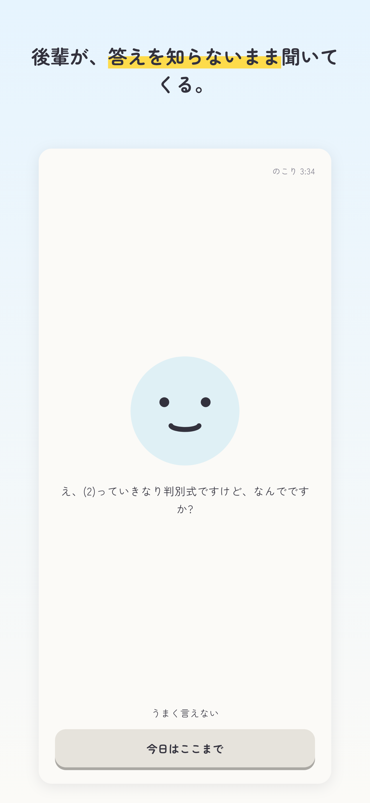
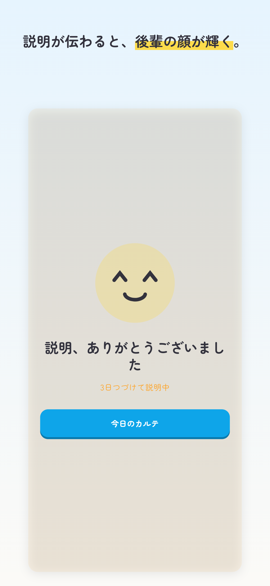
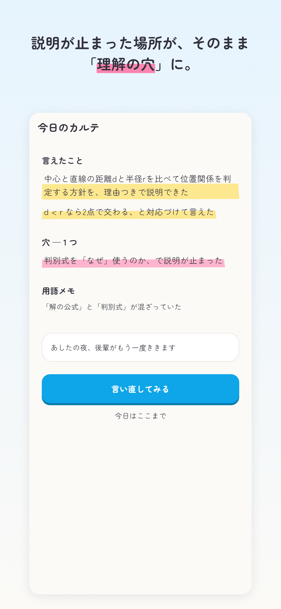
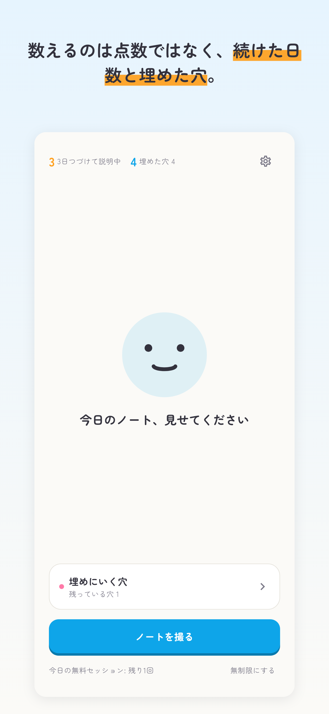
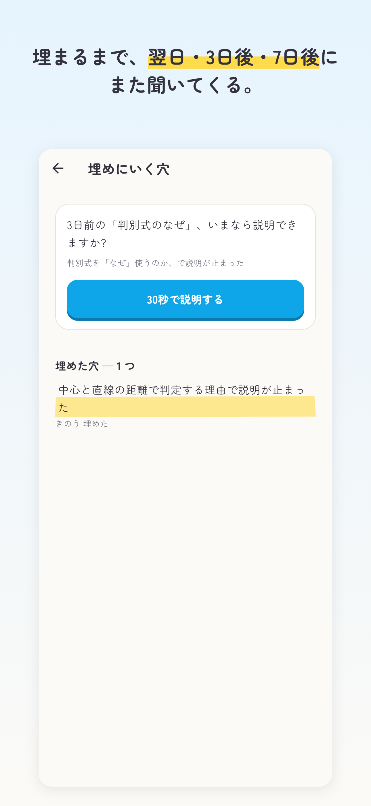

続けさせる仕組みは借りる。見た目の語彙は、高校生のノートとマーカーから作る。
ブルー主役・行動・後輩#0EA5E9
黄マーカー言えたこと#FFD93B
ピンクマーカー穴#FF7AA8
オレンジ連続日数・祝福#FF9F1C
インク文字・輪郭#33323D
きょうのセッション完了。説明、届きました。
青い丸に笑顔、では世の中のアイコンと見分けがつかない。輪郭に吹き出しのしっぽを足して、
「きいてくる」というプロダクトの一行をシルエットに入れた。表情は delighted(^ ^)——
説明が伝わった顔がこのアプリの報酬なので、看板と報酬を一致させる。文字は入れない(48pxで読めない)。
apps/mobile/lib/src/brand/app_mark.dart の1枚が正で、
iOS/Androidのpngはそこから書き出す。アプリ内の後輩の顔(kohai_face.dart)と
同じ色トークンを使っているので、パレットを動かせば両方が一度に動く。
| iOS | ios/Runner/Assets.xcassets/AppIcon.appiconset/Xcode 14以降の単一サイズ形式。1024を1枚置けば残りはビルド時に生成される。 ダーク/ティントはこの形式でしか指定できないので、旧サイズ別pngは削除した。 |
|---|---|
| Android | mipmap-anydpi-v26/ic_launcher.xml(background / foreground / monochrome)mipmap-{m,h,x,xx,xxx}hdpi/ に legacy・round・前景・モノクロ。
背景色は values/ic_launcher_background.xml。
マニフェストに android:roundIcon を追加済み。 |
| ストア | 1024×1024 は上の「通常」をそのまま提出できる(アルファ無し)。 |
すべて実画面のレンダリング。golden test と同じ仕組みで本物のWidgetツリーを描いている (手描きのモックはApp Reviewが実物との一致を求めるため出さない — Guideline 2.3.3)。 並び順は inception-deck §3。見出しの強調はboldではなく蛍光マーカーで引く。

① 会話後輩が、答えを知らないまま聞いてくる。字幕つき。

② 祝福説明が伝わると顔が輝く。正解率は出さない。

③ カルテ黄=言えた / ピンク=穴。このアプリ固有の絵。

④ 連続日数と埋めた穴数えるのは努力だけ。

⑤ 復習翌日・3日後・7日後の再訪。OneSignal賞の根拠。
| captioned-6.9 / 1290×2796 | docs/store/screenshots/{ja,en}/captioned-6.9/ASC「6.9インチディスプレイ」枠へ。いま必須なのはこの枠。 受け付ける寸法は 1290×2796 か 1320×2868。ここに貼ってあるのがこれ。 |
|---|---|
| captioned-6.5 / 1284×2778 | docs/store/screenshots/{ja,en}/captioned-6.5/ASC「6.5インチディスプレイ」枠へ。受け付ける寸法は 1242×2688 か 1284×2778。 絵は6.9版と同じで、端末の論理サイズ(428×926)から描き直している。 |
| plain / 1179×2556 | docs/store/screenshots/{ja,en}/plain/端末フレームなしの素のまま。Shipaton提出要件の指定サイズ(handoff §2)。 App Store Connect には入らない寸法なので、ストアには上の2つを使う。 |
| ロケール | 日本語・英語の2組。英語版は米国配信とNext Gen審査のために要る(handoff §2)。 画面内の文言もアプリのロケールを切り替えて描いているので、翻訳漏れがあればここに出る。 |
inception-deck §3「パッケージデザイン」をApp Store Connectのフィールドに落としたもの。 絶対に書かない言葉: 「AIが解説」「正答率」「偏差値」「サボると losing streak」。
| アプリ名(30字) | カタルテ — 語る × カルテ。
ASOで枠を使い切るなら カタルテ｜答えを教えない数学アプリ(16字)も可。
表示名(CFBundleDisplayName / android:label)が ai-sensei のままなので要変更。 |
|---|---|
| サブタイトル(30字) | 答えは教えない。説明して、穴を見つける。20字 |
| カテゴリ | 教育 / セカンダリ: 参考書 |
| 価格 | 無料(App内課金あり) |
| App内課金 | カタルテ Premium — 自動更新サブスクリプション ¥580/月・はじめの7日間無料 |
| 年齢レーティング | 4+ で申告。対話AIを理由に上げるよう言われる可能性があるので、 許可リスト方式と報告導線を審査メモで先に説明する(下記)。押し戻されたら12+へ。 |
| 配信地域 | 全地域(米国を必ず含める — Shipatonの参加要件) |
| 言語 | 日本語(主) / 英語 |
| 著作権 | 2026 <権利者名> — 未確定 |
| サポートURL | 未確定 — SUPPORT_EMAIL と同じ窓口を指すページを1枚用意する |
| マーケティングURL | 任意。無ければ空でよい |
| プライバシーポリシーURL | 未確定 — PRIVACY_POLICY_URL と同じものを入れる |
| 輸出コンプライアンス | 済 — ITSAppUsesNonExemptEncryption = false(Info.plist)。HTTPSのみ |
image_picker で
カメラロールからも選べる)。あわせて、日本語を話せない担当者でも
「うまく言えない」→「今日はここまで」で会話を終えてカルテまで到達できることを明記する。
| ユーザーコンテンツ — 写真 | ノートの画像。R2に photos/{deviceId}/{sessionId} で保存。
用途=アプリの機能 / ユーザーにリンクする / トラッキングしない |
|---|---|
| ユーザーコンテンツ — 音声 | 会話の文字起こしをカルテ生成のために保存。 音声そのものは保存しない(最終実装で要確認)。用途=アプリの機能 / リンクする / トラッキングしない |
| 識別子 | 匿名の端末ID(UUID)。アカウントの代わり。用途=アプリの機能 / リンクする / トラッキングしない |
| 購入 | RevenueCat 経由の課金状態。用途=アプリの機能 / リンクする / トラッキングしない |
| 診断 | Sentry のクラッシュ・パフォーマンス。用途=アプリの機能 / リンクしない / トラッキングしない |
| ATT(トラッキング許可) | 不要。広告SDKを入れておらず、他社アプリ/サイトを横断する追跡をしない |
LegalLinks(規約/プライバシー)を追加し、
「いつでも解約できます」を「登録は自動更新されます。いつでも解約できます」に改めた。
リンクのURLは --dart-define(TERMS_URL / PRIVACY_POLICY_URL)から入るので、
空のビルドではリンクごと消える。提出ビルドでは必ず埋めること。
ios/Runner.xcodeproj の TARGETED_DEVICE_FAMILY が "1,2"
のままなので、iPad対応アプリとして提出することになる。そうなると
App Store Connect がiPad(13インチ)のスクリーンショットも要求し、
App Review も iPad で動かして見る。画面は393pt幅の単一カラムで作ってあり、
iPadでの確認もしていない。推奨は TARGETED_DEVICE_FAMILY = "1"(iPhoneのみ)へ変更 ——
「iPhone先行、Androidは提出後に追従」(handoff §2)という方針とも揃う。
iPadを出すと決めるなら、iPad用のレイアウトとスクショが別途要る。
カタルテ に(ios/Runner/Info.plist の CFBundleDisplayName と
android/app/src/main/AndroidManifest.xml の android:label。いまは ai-sensei)PRIVACY_POLICY_URL / TERMS_URL / SUPPORT_EMAIL の実体(規約はAppleの標準EULAでも可)<SAMPLE_NOTES_URL>)